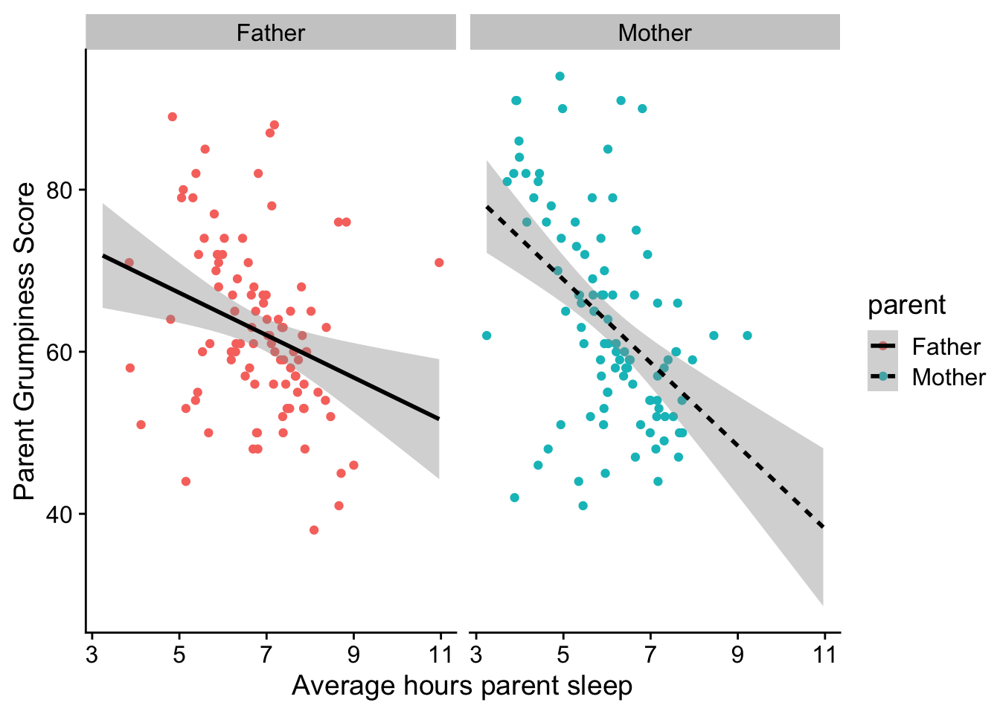
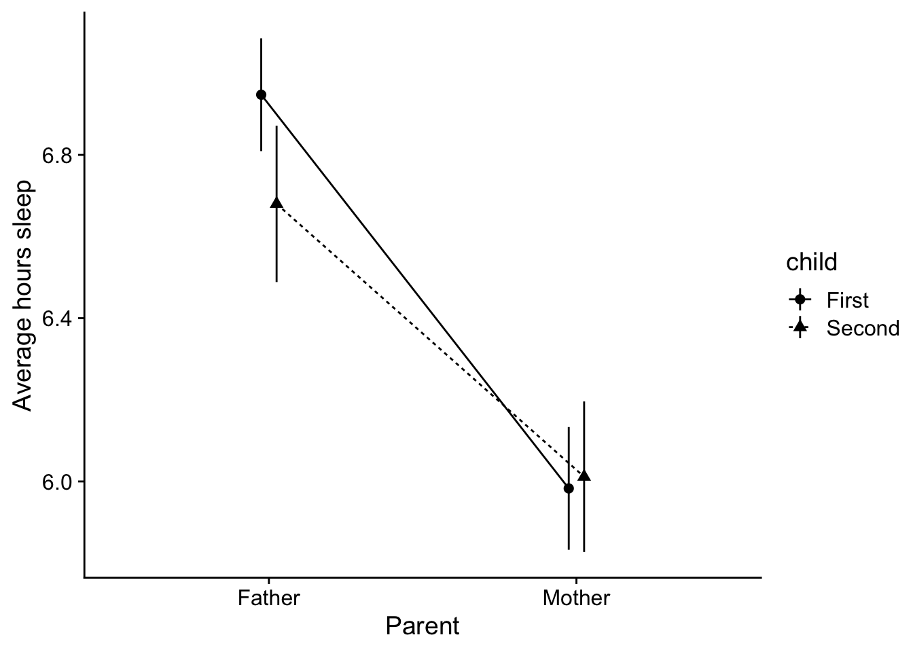

Consider this vignette a compliment to your training materials with plotting, including the DataCamp modules as well as the ggplot specific pdfs that have been made available to you.
The idea here is to provide a series of templates for plot types that you can build from when developing your own plots.
When producing a plot, you need to give consideration to:
the kind of data you have, and
the kind of information you are trying to convey.
In that spirit this vignette will be organized with those considerations in mind. I recommend before you even think of producing anything in R, grab a piece of paper and draw what your ideal plot would look like in terms of structure. What goes on each axes? How are groups differentiated? What kind of plot do you want? etc…
The data
I’ll be using a modified dataset from Danielle Navarro’s Learning statistics with R: A tutorial for psychology students and other beginners which is a nice online text that I may use as a backbone for the course in future years. If you’re interested on Navarro’s take on stats and R, please check it out here. Coincidentally, the lsr package she provides is what we use to calculate certain values like Cohen’s D.
The following data set was used to address the relationships that exist between a newbnorn baby’s (3-6 mos) nightly sleep, their parent’s sleep, and their parent’s overall mood. Several questions modivated the collection of this data, including: - what is the relationship between the average hours of sleep for the baby and parent? - what is the relationship between the average hours of sleep for the parent and their mood? - are these relationships influence by parental role—different for mothers and fathers - does the impact of a newborn baby on sleep differ for mothers and fathers (houts of sleep, grumpiness)
the dataset parent_sleep_data contains the following variables:
parent: 100 mothers (typically primary care giver, especially if breast feeding) v. 100 fathers (un-matched)
child: 100 parents with their first child v. 100 parents with their second child
parent_sleep: average hours parent sleep 30 days prior to assessment
baby_sleep: average hours babry sleep 30 days prior to assessment
Rows: 200 Columns: 5
── Column specification ────────────────────────────────────────────────────────
Delimiter: ","
chr (2): parent, child
dbl (3): parent_sleep, baby_sleep, parent_grumpy
ℹ Use `spec()` to retrieve the full column specification for this data.
ℹ Specify the column types or set `show_col_types = FALSE` to quiet this message.
You might imagine, this data hits a little close to the heart ;)
Correlation / Regression for 2 continuous variables
Typically with correlations and regressions you want to present your data in scatterplot form.
Your scatterplot should include:
all original data points
the regression line
the 95% CI about the regression line
some like the equation (coefficients) and the \(R^2\) in the plot, but I find it to be busy, I’d suggest mentioning these values in the figure caption or just save them for the text.
I like to present the points in a lighter color, with the regression line in a heavier color.
Basic regression example
for example if we wanted to plot the relationship between the average hours of parent’s sleep and their grumpiness:
ggplot(parent_sleep_data, aes(x = parent_sleep, y=parent_grumpy)) +geom_point(color="lightgray") +# points in light graystat_smooth(method ="lm", fullrange = T, se = T, # regression line with 95%CIcolor ="black", linetype="solid") +# color and linetype for regression linexlab("Average hours parent sleep") +ylab("Parent Grumpiness Score") +theme_cowplot()
`geom_smooth()` using formula = 'y ~ x'
Independent regression by group
In this case we are extending the question above, by asking whether the relationship between the average hours of parent’s sleep and their grumpiness differs by parental role. We can either put both groups on the sample plot (differentiating by shape, or color, or linetype), or place them side by side.
same plot
To put different groups on the same plot use the group aesthetic (aes):
ggplot(parent_sleep_data, aes(x = parent_sleep, y=parent_grumpy, group=parent)) +geom_point(aes(color=parent)) +stat_smooth(method ="lm", fullrange = T, se = T, # regression line with 95%CIcolor ="black", aes(linetype=parent)) +# color and linetype for regression linexlab("Average hours parent sleep") +ylab("Parent Grumpiness Score") +theme_cowplot()
`geom_smooth()` using formula = 'y ~ x'
seperate plots
If you find the plot about to be too busy, use facet_wrap() instead
ggplot(parent_sleep_data, aes(x = parent_sleep, y=parent_grumpy)) +geom_point(aes(color=parent)) +stat_smooth(method ="lm", fullrange = T, se = T, # regression line with 95%CIcolor ="black", aes(linetype=parent)) +# color and linetype for regression linexlab("Average hours parent sleep") +ylab("Parent Grumpiness Score") +theme_cowplot() +facet_wrap(~parent)
`geom_smooth()` using formula = 'y ~ x'

Combination
Here I am plotting parent grumpiness as a function of avg. hours of sleep, differentiating BOTH by parent role and child:
ggplot(parent_sleep_data, aes(x = parent_sleep, y=parent_grumpy, group=parent)) +geom_point(aes(color=parent)) +stat_smooth(method ="lm", fullrange = T, se = T, # regression line with 95%CIcolor ="black", aes(linetype=parent)) +# color and linetype for regression linexlab("Average hours parent sleep") +ylab("Parent Grumpiness Score") +theme_cowplot() +facet_wrap(~child)
`geom_smooth()` using formula = 'y ~ x'
Without worrying about the statsitics, what story are these plots conveying about average hours sleep, relative grumpiness, and whether its your first born?
Differences in groups
Typically with differences in groups, you’ll want to present your data in one of several formats, depending on what you want to emphasize.
If your want to emphasize mean differences, choose a barplot or pointrange
If you want to emphaseze differences in distribution, choose a boxplot or violin plot
Comparing groups (levels) of a single IV
Question: Which parent typically gets less sleep when their in a newborn in the family?
barplot
Barplots are typically the industry convention, although we’ve noted their issues:
ggplot(parent_sleep_data, aes(x = parent, y=parent_sleep)) +stat_summary(fun.y ="mean", geom ="col", fill="grey") +# you can change the color of the bar using `fill`; `color` changes the color of the outline.stat_summary(fun.data ="mean_cl_normal", geom ="errorbar", width=.15) +xlab("Parent") +ylab("Average hours sleep") +theme_cowplot()
Warning: The `fun.y` argument of `stat_summary()` is deprecated as of ggplot2 3.3.0.
ℹ Please use the `fun` argument instead.
On annoying thing about barplots is that by default ggplot creats a gap betweeon 0 and the x-axis like above. To fix this, you need to add scale_y_continuous(expand = c(0,0)) to every barplot that you intend to start from 0.
ggplot(parent_sleep_data, aes(x = parent, y=parent_sleep)) +stat_summary(fun.y ="mean", geom ="col", fill="grey") +# you can change the color of the bar using `fill`; `color` changes the color of the outline.stat_summary(fun.data ="mean_cl_normal", geom ="errorbar", width=.15) +xlab("Parent") +ylab("Average hours sleep") +theme_cowplot() +scale_y_continuous(expand =c(0,0))
barplot with datapoints
Another option is barplot with raw data point overlays, although these plots can look odd / busy.
Boxplots are useful if you want to give your reader a little more info about the distribution of the data being compared. Here is the mother v. father data in boxplot form
Comparing groups in a factorial design (interaction plot)
On we get to factoral ANOVA, we are comparing groups along multiple dimensions (multiple IVs). For example, here we are looking a means data of the average hours of sleep as a function of BOTH parent role and child number. A more technical way of saying this is that we are looking at these values as a function of the interaction between parent role and child number. Since there are two levels in both parent and child we end up with four means to convey. We typically want these means grouped in a way that conveys the design of the analysis.
Here I am grouping parent along the x-axis, and grouping child by the geom.
barplot with error bars
ggplot(parent_sleep_data, aes(x = parent, y=parent_sleep, group = child)) +stat_summary(fun.y ="mean", geom ="col", position =position_dodge(.9), aes(fill=child), col="black") +stat_summary(fun.data ="mean_cl_normal", geom ="errorbar", width=.15, position =position_dodge(.9)) +xlab("Parent") +ylab("Average hours sleep") +theme_cowplot()
boxplot
Note that when you put together a boxplot, you need to note that the grouping is by the interaction between the two variables.
Typically we only use line plots when the data is “connected” somehow. For example, imagine that instead of seperate groups for child (100 parents with their first v. 100 different parents with their second) be got data from parents with two children (200 parants comparing experience with first child v second). FWIW this would end up being a mixed design—parent: mother v. father is a between variable, and child would be a within. In this case it would make sense to draw a line plot connecting first child values to the second child values to emphasize that this data reflects that these data a meaningfully connected / dependent on one another.
In cases like these I recommend a line and pointrange plot. I also recommend getting familiar with position_dodge as a way of dealing with overlapping pointranges. For example, without the points and lines dodged:
ggplot(parent_sleep_data, aes(x = parent, y=parent_sleep, group = child)) +stat_summary(fun.data ="mean_se", geom ="pointrange", aes(shape=child), position =position_dodge(.1)) +stat_summary(fun.y ="mean", geom ="line", aes(linetype=child), position =position_dodge(.1)) +xlab("Parent") +ylab("Average hours sleep") +theme_cowplot()

A note on color and APA formatting
If you are concerned about APA formatting, I find the theme_cowplot() from the cowplot package will get you almost all of the way there depending on how complex your plot is. For example, this plot is pretty ready to go:
A few issues remain. APA asks for the legend to be within the plot itself (not off to the side). This can be accplished by adjusting the legend. With the legend.position call, imagine your plot has a coordinate system ranging from 0 to 1 along both the x and y axes. So for example, to place the legend in a position at 50% of the x-axis and 75% of the y-axis:
Play around with this to get a feel for how position changes.
Title-ing
To change the header in the legend to a capital “Child”, I need to have an appreciation for what is changing in the lengend. In this case child is designated by both shape and linetype. I then use the labs() call
This is typically good enough for the legend, but I invite you to go this page on Datanova if you really want to get into customizing the legend, including reversing the order of items, and presenting the legend in wide format.
Color
A convention of print publication is to present your figures in black-white-greyscale (cheaper ink!). Since most people read articles by way of pdf you might find this a bit antiquated.
My Pro-tip: - For simple plots like these, use APA format (black-white-grey) if your intend to submit for print. For complex plots this may mean you need to differentiate your group data by shape or linetype as in the previous plot.
I’d offer for presentations and posters, use color to make your figures pop! i.e., highlighting important aspectes of the data.
ggplot() has a default color scheme that’s pretty terrible. For example, you recreate the previous plot differntiating child (First v. Second) by color, I can add color to first line.
Differentiaing the same thing, child by shape, linetype, and color is a bit redundent. So there’s that. At the same time those default color choices are awful! Fortunately I can change this using scale_color_manual
For other cool stuff that can be done with cowplot() including placing multiple plots side by side, check out the signette links below written by its author, Claus O. Wilke:
---title: "More advanced ggPlots"---Consider this vignette a compliment to your training materials with plotting, including the DataCamp modules as well as the `ggplot` specific pdfs that have been made available to you.The idea here is to provide a series of templates for plot types that you can build from when developing your own plots. When producing a plot, you need to give consideration to:(1) the kind of data you have, and (2) the kind of information you are trying to convey.In that spirit this vignette will be organized with those considerations in mind. I recommend before you even think of producing anything in `R`, grab a piece of paper and draw what your ideal plot would look like in terms of structure. What goes on each axes? How are groups differentiated? What kind of plot do you want? etc...## The dataI'll be using a modified dataset from Danielle Navarro's *Learning statistics with R:A tutorial for psychology students and other beginners* which is a nice online text that I may use as a backbone for the course in future years. If you're interested on Navarro's take on stats and `R`, please check it out [here](http://compcogscisydney.org/learning-statistics-with-r). Coincidentally, the `lsr` package she provides is what we use to calculate certain values like Cohen's D.> The following data set was used to address the relationships that exist between a newbnorn baby's (3-6 mos) nightly sleep, their parent's sleep, and their parent's overall mood. Several questions modivated the collection of this data, including:- what is the relationship between the average hours of sleep for the baby and parent?- what is the relationship between the average hours of sleep for the parent and their mood?- are these relationships influence by parental role—different for mothers and fathers- does the impact of a newborn baby on sleep differ for mothers and fathers (houts of sleep, grumpiness)the dataset `parent_sleep_data` contains the following variables:- `parent`: 100 mothers (typically primary care giver, especially if breast feeding) v. 100 fathers (un-matched)- `child`: 100 parents with their first child v. 100 parents with their second child- `parent_sleep`: average hours parent sleep 30 days prior to assessment- `baby_sleep`: average hours babry sleep 30 days prior to assessment- `parent_grumpy`: parent grunmpiness score```{r load in libraries and data}pacman::p_load(tidyverse, cowplot)parent_sleep_data <-read_csv("https://raw.githubusercontent.com/tehrandavis/graduate_statistics/main/practice_datasets/parent_sleep.csv")```* You might imagine, this data hits a little close to the heart ;)## Correlation / Regression for 2 continuous variablesTypically with correlations and regressions you want to present your data in scatterplot form. Your scatterplot should include:- all original data points- the regression line- the 95% CI about the regression line- some like the equation (coefficients) and the $R^2$ in the plot, but I find it to be busy, I'd suggest mentioning these values in the figure caption or just save them for the text.- I like to present the points in a lighter color, with the regression line in a heavier color.### Basic regression examplefor example if we wanted to plot the relationship between the average hours of parent's sleep and their grumpiness:```{r regression plot}ggplot(parent_sleep_data, aes(x = parent_sleep, y=parent_grumpy)) +geom_point(color="lightgray") +# points in light graystat_smooth(method ="lm", fullrange = T, se = T, # regression line with 95%CIcolor ="black", linetype="solid") +# color and linetype for regression linexlab("Average hours parent sleep") +ylab("Parent Grumpiness Score") +theme_cowplot()```### Independent regression by groupIn this case we are extending the question above, by asking whether the relationship between the average hours of parent's sleep and their grumpiness differs by parental role. We can either put both groups on the sample plot (differentiating by shape, or color, or linetype), or place them side by side.#### same plotTo put different groups on the same plot use the `group` aesthetic (aes):```{r two regressions same plot}ggplot(parent_sleep_data, aes(x = parent_sleep, y=parent_grumpy, group=parent)) +geom_point(aes(color=parent)) +stat_smooth(method ="lm", fullrange = T, se = T, # regression line with 95%CIcolor ="black", aes(linetype=parent)) +# color and linetype for regression linexlab("Average hours parent sleep") +ylab("Parent Grumpiness Score") +theme_cowplot()```#### seperate plotsIf you find the plot about to be too busy, use `facet_wrap()` instead```{r}ggplot(parent_sleep_data, aes(x = parent_sleep, y=parent_grumpy)) +geom_point(aes(color=parent)) +stat_smooth(method ="lm", fullrange = T, se = T, # regression line with 95%CIcolor ="black", aes(linetype=parent)) +# color and linetype for regression linexlab("Average hours parent sleep") +ylab("Parent Grumpiness Score") +theme_cowplot() +facet_wrap(~parent)```#### CombinationHere I am plotting parent grumpiness as a function of avg. hours of sleep, differentiating BOTH by `parent` role and `child`:```{r combo with facet}ggplot(parent_sleep_data, aes(x = parent_sleep, y=parent_grumpy, group=parent)) +geom_point(aes(color=parent)) +stat_smooth(method ="lm", fullrange = T, se = T, # regression line with 95%CIcolor ="black", aes(linetype=parent)) +# color and linetype for regression linexlab("Average hours parent sleep") +ylab("Parent Grumpiness Score") +theme_cowplot() +facet_wrap(~child)```Without worrying about the statsitics, what story are these plots conveying about average hours sleep, relative grumpiness, and whether its your first born?## Differences in groupsTypically with differences in groups, you'll want to present your data in one of several formats, depending on what you want to emphasize.- If your want to emphasize mean differences, choose a barplot or pointrange- If you want to emphaseze differences in distribution, choose a boxplot or violin plot### Comparing groups (levels) of a single IVQuestion: Which parent typically gets less sleep when their in a newborn in the family?#### barplotBarplots are typically the industry convention, although we've noted their issues:```{r basic barplot}ggplot(parent_sleep_data, aes(x = parent, y=parent_sleep)) +stat_summary(fun.y ="mean", geom ="col", fill="grey") +# you can change the color of the bar using `fill`; `color` changes the color of the outline.stat_summary(fun.data ="mean_cl_normal", geom ="errorbar", width=.15) +xlab("Parent") +ylab("Average hours sleep") +theme_cowplot()```On annoying thing about barplots is that by default `ggplot` creats a gap betweeon 0 and the x-axis like above. To fix this, you need to add `scale_y_continuous(expand = c(0,0))` to every barplot that you intend to start from 0.```{r basic barplot with corrected axis}ggplot(parent_sleep_data, aes(x = parent, y=parent_sleep)) +stat_summary(fun.y ="mean", geom ="col", fill="grey") +# you can change the color of the bar using `fill`; `color` changes the color of the outline.stat_summary(fun.data ="mean_cl_normal", geom ="errorbar", width=.15) +xlab("Parent") +ylab("Average hours sleep") +theme_cowplot() +scale_y_continuous(expand =c(0,0))```#### barplot with datapointsAnother option is barplot with raw data point overlays, although these plots can look odd / busy.```{r barplot with datapoints}ggplot(parent_sleep_data, aes(x = parent, y=parent_sleep)) +stat_summary(fun.y ="mean", geom ="col", position =position_dodge(.9), fill="grey", col="black") +geom_point(size=.5, position =position_jitter(.01)) +xlab("Parent") +ylab("Average hours sleep") +theme_cowplot() +scale_y_continuous(expand =c(0,0))```#### boxplotBoxplots are useful if you want to give your reader a little more info about the distribution of the data being compared. Here is the mother v. father data in boxplot form```{r boxplot}ggplot(parent_sleep_data, aes(x = parent, y=parent_sleep)) +geom_boxplot() +xlab("Parent") +ylab("Average hours sleep") +theme_cowplot() ```### Comparing groups in a factorial design (interaction plot)On we get to factoral ANOVA, we are comparing groups along multiple dimensions (multiple IVs). For example, here we are looking a means data of the average hours of sleep as a function of BOTH parent role and child number. A more technical way of saying this is that we are looking at these values as a function of the interaction between parent role and child number. Since there are two levels in both `parent` and `child` we end up with four means to convey. We typically want these means grouped in a way that conveys the design of the analysis.Here I am grouping `parent` along the x-axis, and grouping child by the `geom`.#### barplot with error bars```{r factoral barplot}ggplot(parent_sleep_data, aes(x = parent, y=parent_sleep, group = child)) +stat_summary(fun.y ="mean", geom ="col", position =position_dodge(.9), aes(fill=child), col="black") +stat_summary(fun.data ="mean_cl_normal", geom ="errorbar", width=.15, position =position_dodge(.9)) +xlab("Parent") +ylab("Average hours sleep") +theme_cowplot()```#### boxplotNote that when you put together a boxplot, you need to note that the grouping is by the `interaction` between the two variables.```{r factoral boxplot}ggplot(parent_sleep_data, aes(x = parent, y=parent_sleep, fill = child)) +geom_boxplot(aes(group=interaction(child,parent))) +xlab("Parent") +ylab("Average hours sleep") +theme_cowplot()```#### violin-barplot combo```{r violin barplot}ggplot(parent_sleep_data, aes(x = parent, y=parent_sleep, fill = child)) +geom_violin(trim = T,aes(group=interaction(child,parent))) +geom_boxplot(width = .15,position =position_dodge(.9),aes(group=interaction(child,parent)) ) +xlab("Parent") +ylab("Average hours sleep") +theme_cowplot()```## Line plotsTypically we only use line plots when the data is "connected" somehow. For example, imagine that instead of seperate groups for `child` (100 parents with their first v. 100 different parents with their second) be got data from parents with two children (200 parants comparing experience with first child v second). FWIW this would end up being a mixed design—parent: mother v. father is a between variable, and child would be a within. In this case it would make sense to draw a line plot connecting first child values to the second child values to emphasize that this data reflects that these data a meaningfully connected / dependent on one another.In cases like these I recommend a line and pointrange plot. I also recommend getting familiar with `position_dodge` as a way of dealing with overlapping pointranges. For example, without the points and lines dodged:```{r line plot}ggplot(parent_sleep_data, aes(x = parent, y=parent_sleep, group = child)) +stat_summary(fun.data ="mean_se", geom ="pointrange", aes(shape=child)) +stat_summary(fun.y ="mean", geom ="line", aes(linetype=child)) +xlab("Parent") +ylab("Average hours sleep") +theme_cowplot()```compared to with them dodged:```{r}ggplot(parent_sleep_data, aes(x = parent, y=parent_sleep, group = child)) +stat_summary(fun.data ="mean_se", geom ="pointrange", aes(shape=child), position =position_dodge(.1)) +stat_summary(fun.y ="mean", geom ="line", aes(linetype=child), position =position_dodge(.1)) +xlab("Parent") +ylab("Average hours sleep") +theme_cowplot()```## A note on color and APA formattingIf you are concerned about APA formatting, I find the `theme_cowplot()` from the `cowplot` package will get you almost all of the way there depending on how complex your plot is. For example, this plot is pretty ready to go:```{r}ggplot(parent_sleep_data, aes(x = parent, y=parent_sleep, group = child)) +stat_summary(fun.data ="mean_se", geom ="pointrange", aes(shape=child)) +stat_summary(fun.y ="mean", geom ="line", aes(linetype=child)) +xlab("Parent") +ylab("Average hours sleep") +theme_cowplot()```## The Legend ### PositioningA few issues remain. APA asks for the legend to be within the plot itself (not off to the side). This can be accplished by adjusting the legend. With the `legend.position` call, imagine your plot has a coordinate system ranging from 0 to 1 along both the x and y axes. So for example, to place the legend in a position at 50% of the x-axis and 75% of the y-axis:```{r}ggplot(parent_sleep_data, aes(x = parent, y=parent_sleep, group = child)) +stat_summary(fun.data ="mean_se", geom ="pointrange", aes(shape=child)) +stat_summary(fun.y ="mean", geom ="line", aes(linetype=child)) +xlab("Parent") +ylab("Average hours sleep") +theme_cowplot() +theme(legend.position =c(.5, .75))```Play around with this to get a feel for how position changes.### Title-ingTo change the header in the legend to a capital "Child", I need to have an appreciation for what is changing in the lengend. In this case `child` is designated by both `shape` and `linetype`. I then use the `labs()` call```{r}ggplot(parent_sleep_data, aes(x = parent, y=parent_sleep, group = child)) +stat_summary(fun.data ="mean_se", geom ="pointrange", aes(shape=child), position =position_dodge(.1)) +stat_summary(fun.y ="mean", geom ="line", aes(linetype=child), position =position_dodge(.1)) +xlab("Parent") +ylab("Average hours sleep") +theme_cowplot() +theme(legend.position =c(.5, .75)) +labs(shape ="Child", linetype="Child")```This is typically good enough for the legend, but I invite you to go [this page on Datanova](https://www.datanovia.com/en/blog/ggplot-legend-title-position-and-labels/) if you really want to get into customizing the legend, including reversing the order of items, and presenting the legend in wide format.### ColorA convention of print publication is to present your figures in black-white-greyscale (cheaper ink!). Since most people read articles by way of pdf you might find this a bit antiquated. **My Pro-tip: **- For simple plots like these, use APA format (black-white-grey) if your intend to submit for print. For complex plots this may mean you need to differentiate your group data by `shape` or `linetype` as in the previous plot.- I'd offer for presentations and posters, use color to make your figures pop! i.e., highlighting important aspectes of the data. `ggplot()` has a default color scheme that's pretty terrible. For example, you recreate the previous plot differntiating `child` (First v. Second) by color, I can add color to first line.```{r}ggplot(parent_sleep_data, aes(x = parent, y=parent_sleep, group = child, color=child)) +stat_summary(fun.data ="mean_se", geom ="pointrange", aes(shape=child), position =position_dodge(.1)) +stat_summary(fun.y ="mean", geom ="line", aes(linetype=child), position =position_dodge(.1)) +xlab("Parent") +ylab("Average hours sleep") +theme_cowplot() +theme(legend.position =c(.5, .75))```Differentiaing the same thing, `child` by `shape`, `linetype`, and `color` is a bit redundent. So there's that. At the same time those default color choices are awful! Fortunately I can change this using `scale_color_manual````{r}```{r}ggplot(parent_sleep_data, aes(x = parent, y=parent_sleep, group = child, color=child)) + stat_summary(fun.data = "mean_se", geom = "pointrange", position = position_dodge(.1)) + stat_summary(fun.y = "mean", geom = "line", position = position_dodge(.1)) + xlab("Parent") + ylab("Average hours sleep") + theme_cowplot() + theme(legend.position = c(.5, .75)) + scale_color_manual(values = c("black", "red"))```## Advanced stuffFor other cool stuff that can be done with `cowplot()` including placing multiple plots side by side, check out the signette links below written by its author, [Claus O. Wilke](http://wilkelab.org/):+ [Introduction to cowplot](https://cran.r-project.org/web/packages/cowplot/vignettes/introduction.html)+ [Changing the axis positions](https://cran.r-project.org/web/packages/cowplot/vignettes/axis_position.html)+ [Plot annotations](https://cran.r-project.org/web/packages/cowplot/vignettes/plot_annotations.html)+ [Arranging plots in a grid](https://cran.r-project.org/web/packages/cowplot/vignettes/plot_grid.html)+ [Shared legends](https://cran.r-project.org/web/packages/cowplot/vignettes/shared_legends.html)